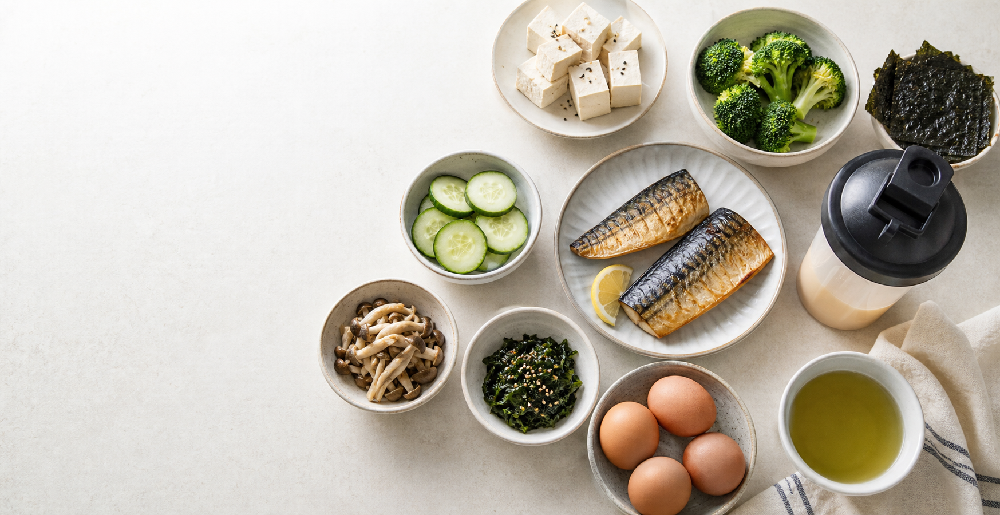

28-day Korean Switch-On inspired tracker
Plan the day. Log the meal. Keep the streak visible.
A practical four-week tracker for shake days, low-carb high-protein meals, and the scheduled fast days described in public reviews of the diet.
28
days left
0
logged
Week 1
selected phase
Week 1
Day 1
Shake reset
Permitted today
Food list
This is a planning website, not medical advice. The diet includes restrictive shake days and 24-hour fasts; check with a qualified clinician before starting, especially with health conditions, pregnancy, eating-disorder history, or medication use.